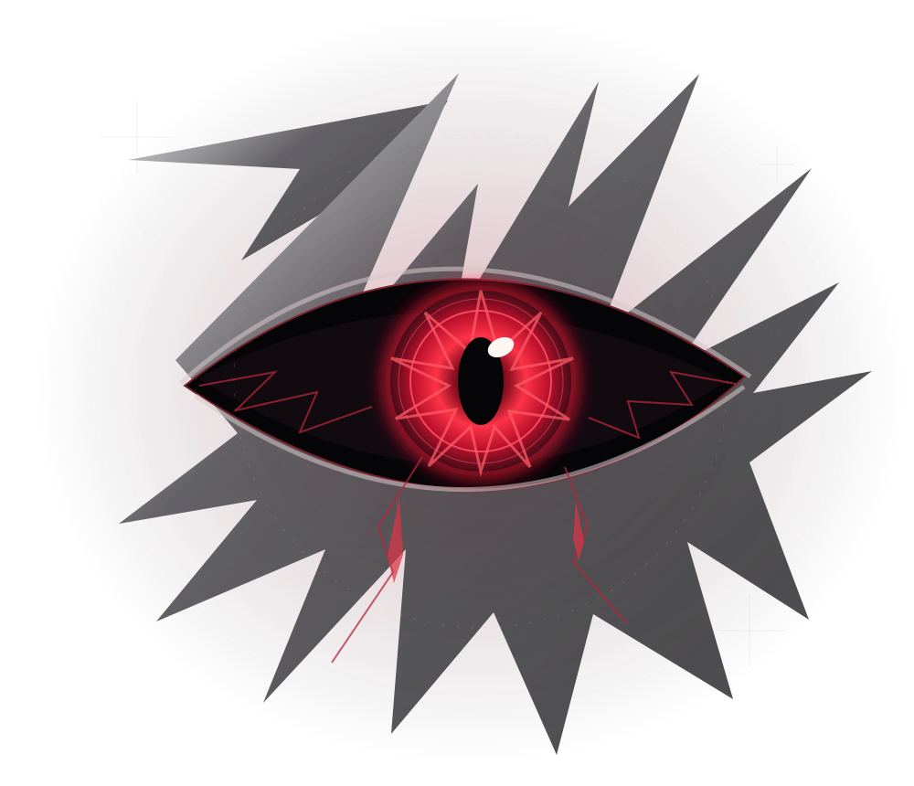

XWYAN / PERSONAL LAB好奇心、眠らない。
THOUGHT → CODE → REALITYNO SIGNAL LOST
01 / THE MIND意志

xwyanXINGLABS / 个人实验室
保持清醒。
保持创造。
好的想法，不该只停在脑海里。
这里是我的个人实验室。写代码、做实验，把好奇变成行动，把日常的麻烦变成真正能用的工具。
不急着定义自己。
让作品，慢慢给出答案。
02 / THE UNKNOWN未完成
03 / THE CONNECTION接続
SOMEWHERE BETWEEN AN IDEA & A COMMIT
在另一端，
找到我。
THE OPEN DOORGitHub / xinglabs
（在新标签页打开）